记录一下如何清理 Gradle 缓存
cd android
./gradlew clean
Remove-Item -Recurse -Force -ErrorAction SilentlyContinue "C:\Users\xxx\.gradle\.tmp","C:\Users\xxx\.gradle\caches"
记得换成你自己的“用户名”哦
删除时如果提示正在使用，可以尝试干掉
如果之前装过全局安装过
npm uninstall -g react-native-cli @react-native-community/cli
npx @react-native-community/cli@latest init MyApp001
上面的命令会自动安装依赖，如果想跳过安装依赖，可以使用下面的命令：
# 使用 --skip-install 参数可以跳过自动安装依赖。
npx @react-native-community/cli@latest init MyApp001 --skip-install
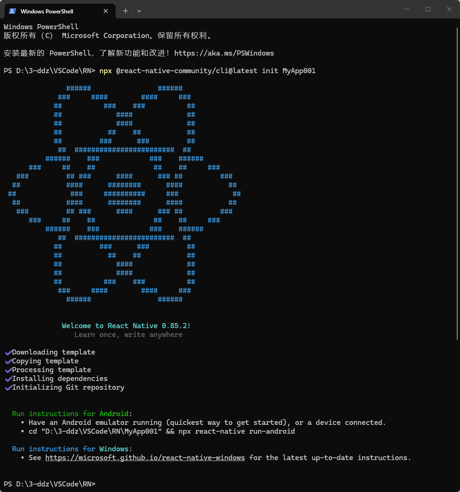
这里弄得是项目级别的镜像，项目根目录添加
registry=https://registry.npmmirror.com/
之前已经配置了全局的 npm 镜像，这里仅仅记录一下。查看 npm 源地址：
先整体看一下需要修改的几个文件：
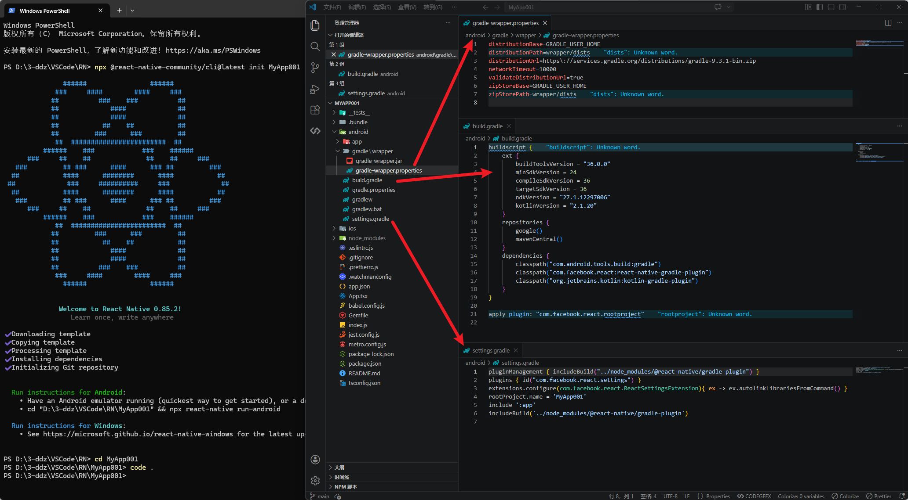
该文件只需修改
distributionUrl=https\://mirrors.aliyun.com/gradle/distributions/v9.3.1/gradle-9.3.1-bin.zip
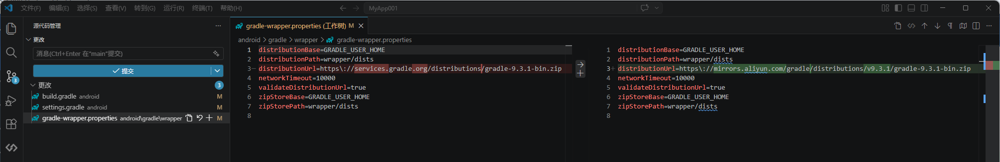
下面是该文件修改之后的全部内容：
咱们再对比一下，看看修改了哪些地方：
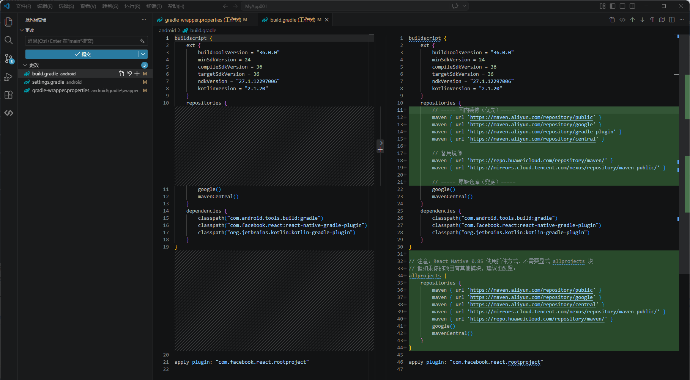
注意：该文件格式要求很严格。下面是该文件修改之后的全部内容：
咱们再对比一下，看看修改了哪些地方：
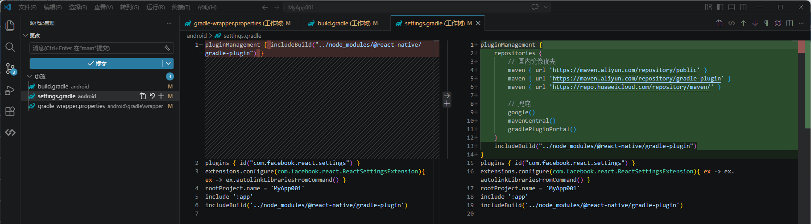
npx react-native run-android
如果你想真机调试，你可以这样做：
# 查看设备ID
adb devices
# 使用 --deviceId 参数指定真机设备进行调试
npx react-native run-android --deviceId <设备ID>
来，看一下运行过程（起的终端真不少啊）：
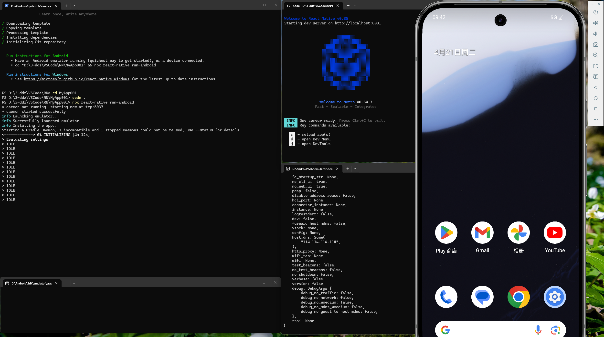
第一次是真的慢啊！（不对啊！第一次，不应该很快嘛）。等他跑起来，
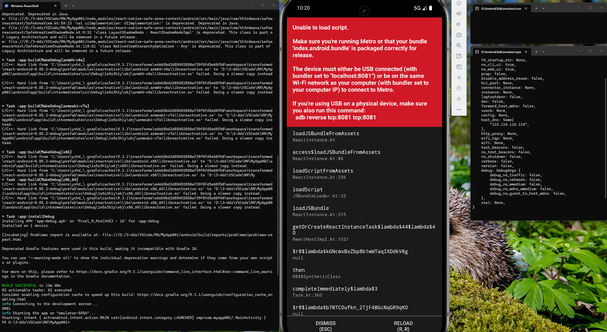
既然服务停了，那咱就重新启动一下。下图你会看到 8081 已经启动了，之后刷新模拟器中的“RELOAD”，不知道是不是咱哪里弄错了，还是不行：
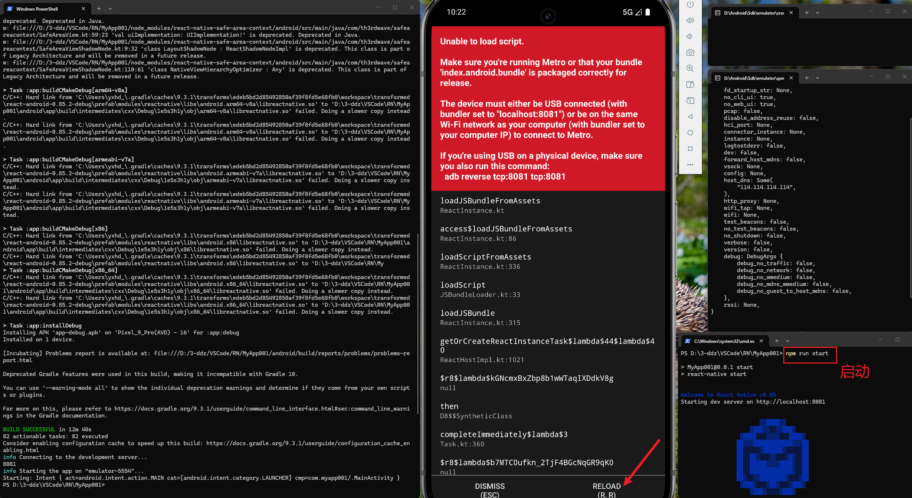
算了，从头再来一次把。我去，竟然是原来越快，神奇啊
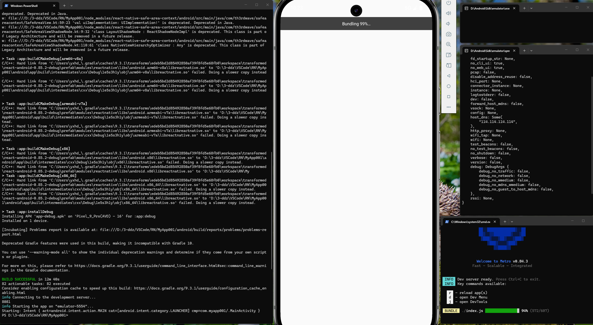
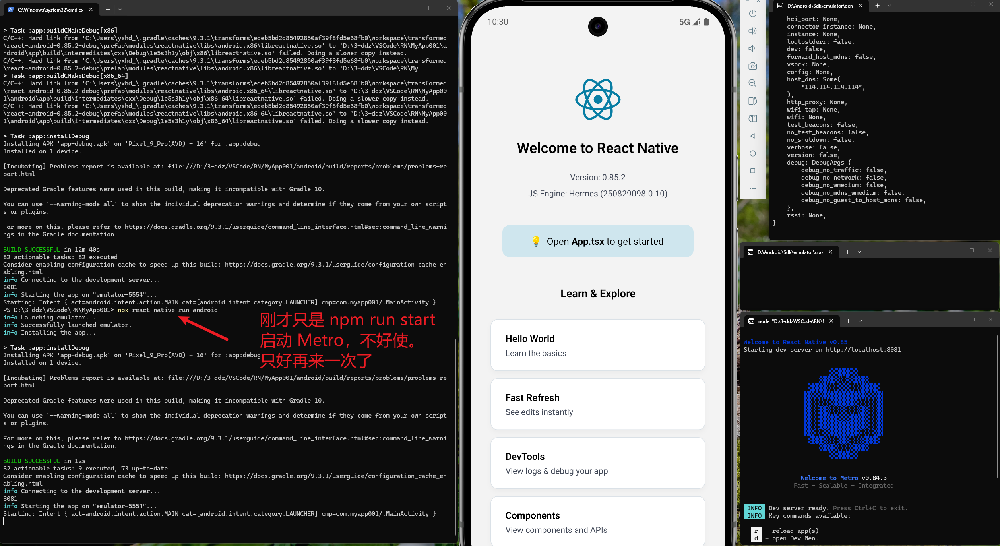
说好的
必须安排，文件全部内容如下：
来吧，请看：
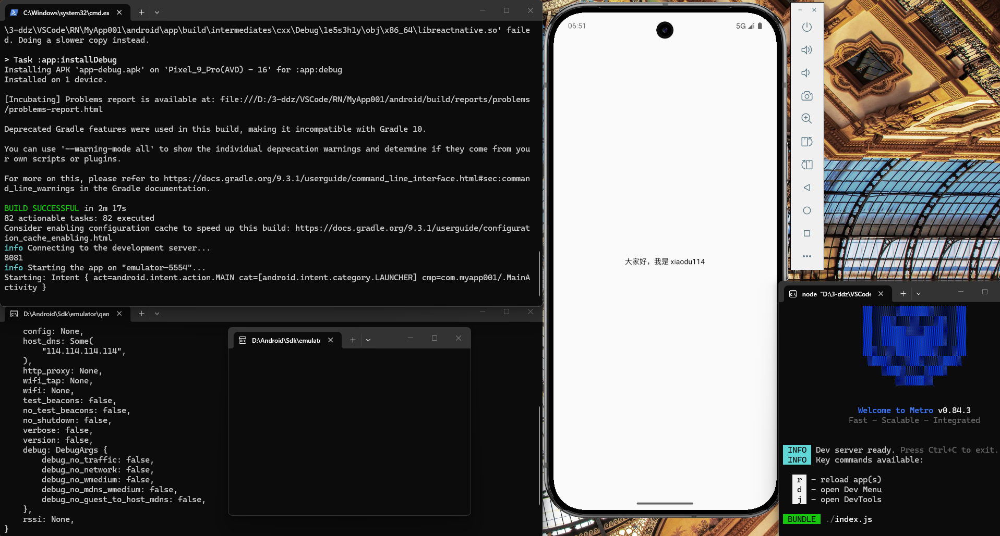
1、镜像问题？
先看截图：
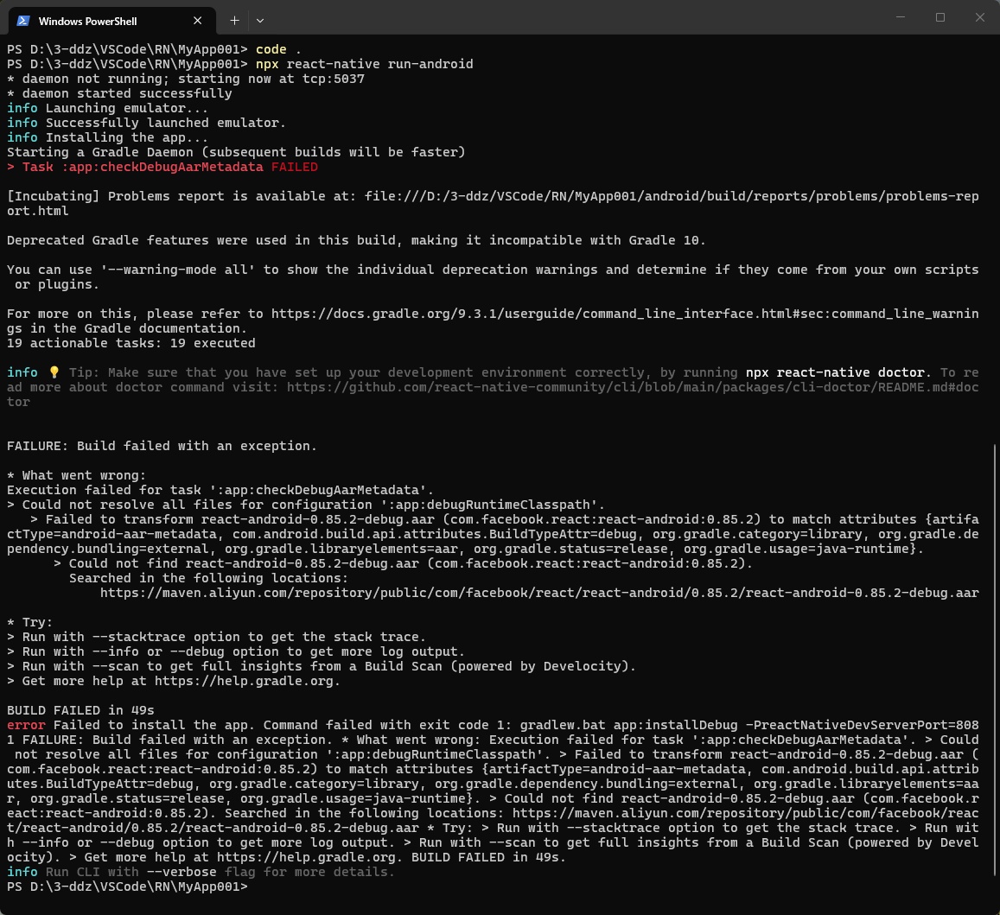
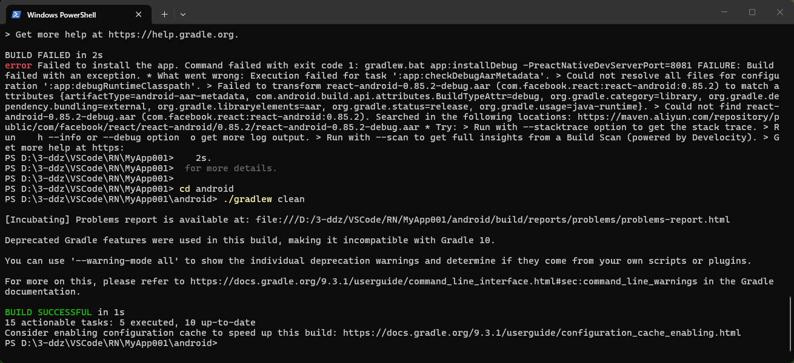
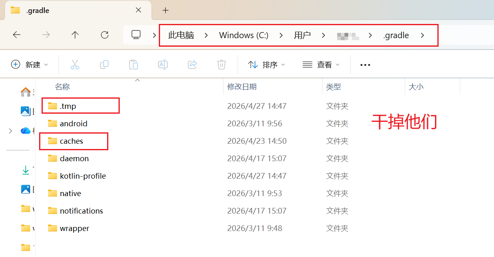
分析：我记得最开始弄
为了验证上面的分析，现在访问一下：
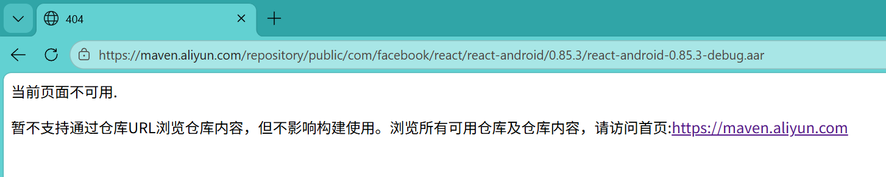
等到哪天